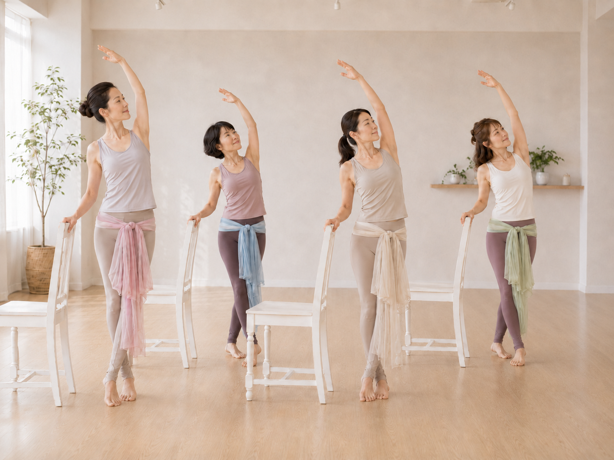
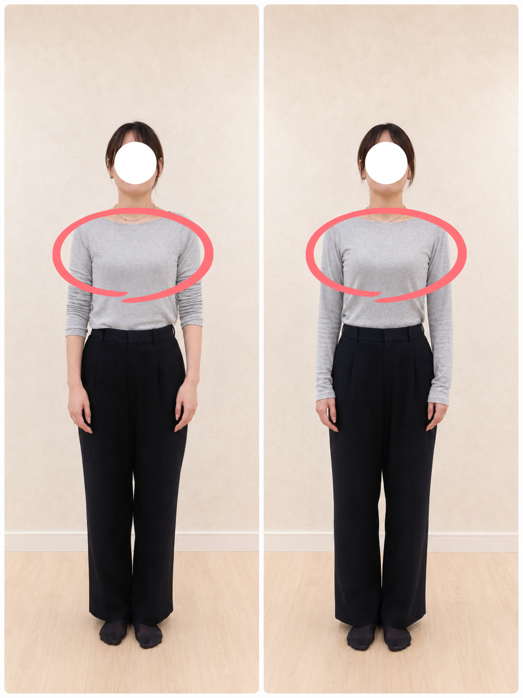
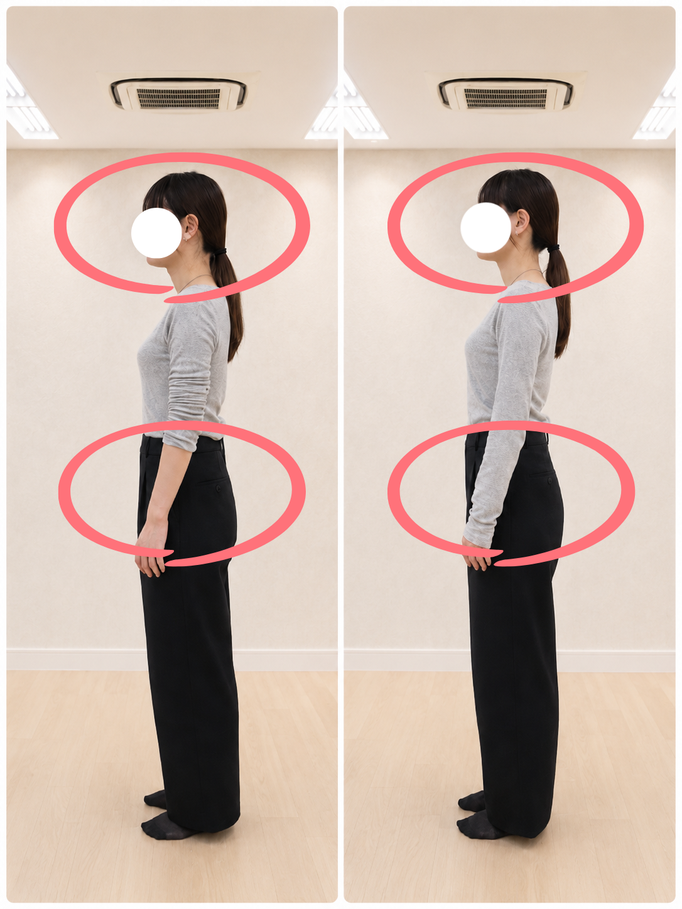
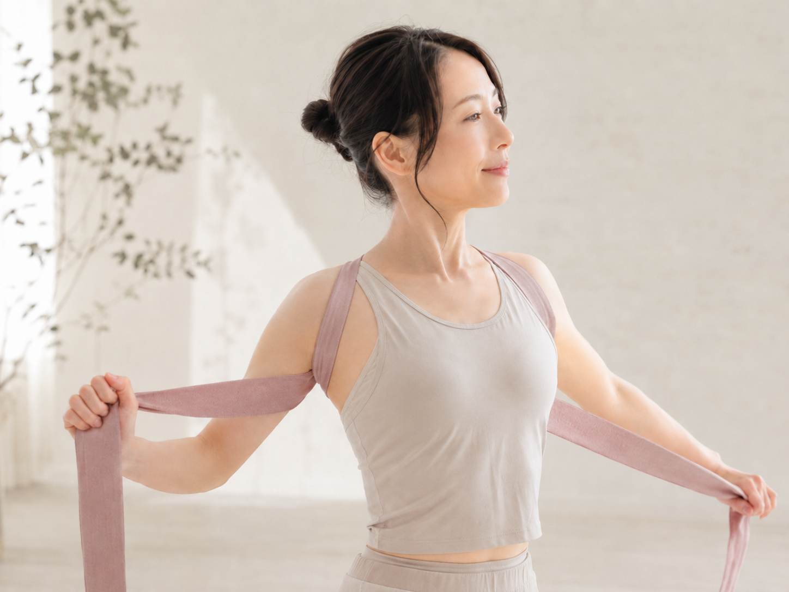

「続かなかった私でも続く」に変わる。
筋力や運動神経に依存しない設計で、身体に負担をかけずに整えるメソッド。頑張り切れなかった経験がある方でも、初回から変化が見えることで継続の自信を取り戻せます。
TASUKI STRETCH の体感変化と期待できる効果

筋力や運動神経に依存しない設計で、身体に負担をかけずに整えるメソッド。頑張り切れなかった経験がある方でも、初回から変化が見えることで継続の自信を取り戻せます。

呼吸と姿勢が整うことで、肩や首の負担が分散。午後のパフォーマンス低下や疲労の蓄積を抑え、オンオフの切り替えもしやすくなります。忙しい時期ほど差が出る変化です。

胸が開き、視線と呼吸が安定することで、緊張時でも自然な会話がしやすくなります。姿勢と表情の印象が変わることで、婚活の場で褒められるポイントが増えていきます。

全身の連動を整えることで、歩行や立ち座りが滑らかになり、日常動作の不安を軽減。身体の快適さが増えるほど外出や交流が増え、活力ある毎日を続けやすくなります。

首まわりと胸郭の詰まりが軽減されることで、顔の角度や輪郭の見え方が整いやすくなります。写真・動画・オンライン会議などで、自然体のまま好印象を作れる状態へ導きます。

東洋医学の考え方をベースに、呼吸・姿勢・循環の関係を体感的に理解。自分の身体に合う整え方がわかり、日々のセルフケア選びにも納得感が生まれます。